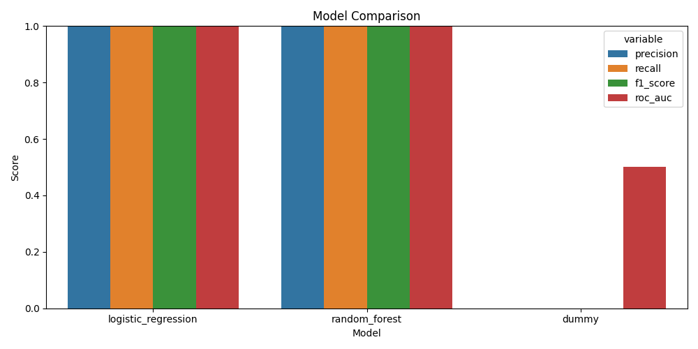
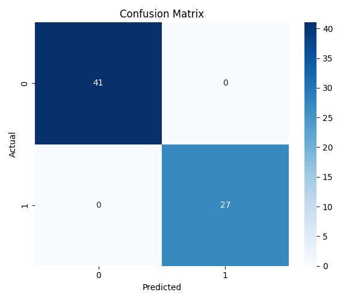
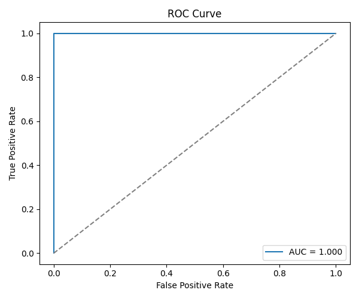
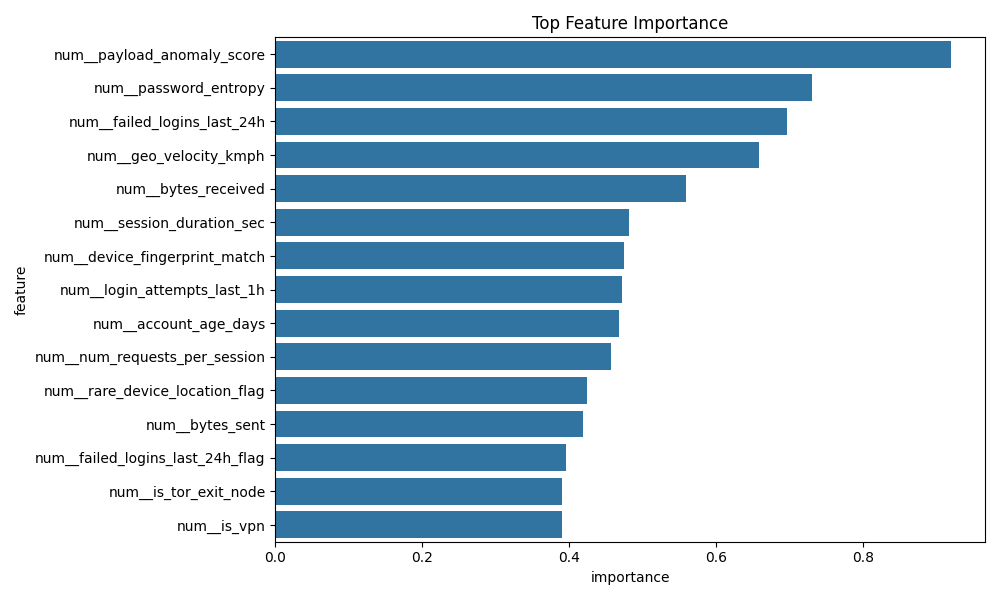

Problem
Detect whether a login session is legitimate or fraudulent based on behavioral, network, and anomaly-related signals.
University Project Showcase
A beginner-friendly cybersecurity machine learning project that detects suspicious login behavior, account takeover attempts, and identity-related fraud using a full end-to-end pipeline.
Dataset used: Kaggle login fraud detection dataset focused on suspicious authentication behavior.
Overview
Detect whether a login session is legitimate or fraudulent based on behavioral, network, and anomaly-related signals.
450 cleaned login-session records with features such as failed logins, VPN usage, Tor usage, password entropy, and anomaly score.
A full ML pipeline with preprocessing, feature engineering, model comparison, saved artifacts, sample predictions, and report-ready figures.
Pipeline
Loaded the Kaggle CSV, removed the banner rows, validated the target column, and created a clean training file.
Split the data into train, validation, and test sets using stratified sampling. Scaled numeric data and one-hot encoded categorical features.
Created explainable features such as failed-login risk flag, device-location rarity, event hour, and night-login indicator.
Compared a dummy classifier, logistic regression, and random forest using the same reproducible pipeline.
Measured precision, recall, F1-score, ROC-AUC, confusion matrix, cross-validation, and sample predictions.
Results
| Model | Precision | Recall | F1 | ROC-AUC |
|---|
The final selected model was logistic regression. It matched the strongest result while staying easy to explain in an academic setting.
The top model signals were:
Important limitation: the dataset is synthetic, so the perfect scores likely reflect cleaner separation than real-world login fraud data.
Figures




Demo Output
| Timestamp | Country | Attempts | Failed Logins | Anomaly Score | Fraud Probability | Prediction |
|---|
Deliverables
A full written draft describing the dataset, preprocessing, methodology, results, and limitations.
Open technical reportA slide-by-slide outline you can transfer directly into PowerPoint or Google Slides.
Open presentation outlineSaved model, CSV outputs, metrics, sample predictions, figures, and processed splits.
Open metrics JSON